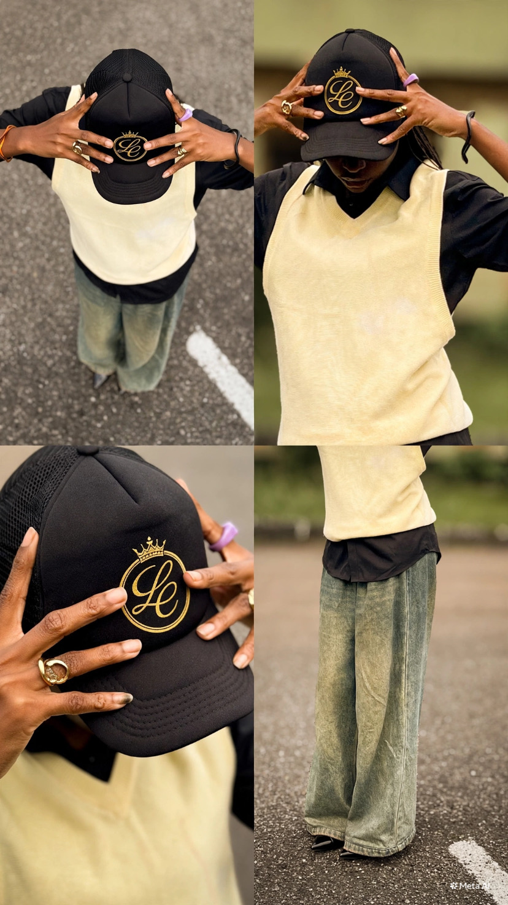

A LAGOS-BORN STREETWEAR HOUSE
For those
becoming.
Luxury streetwear, crafted in Lagos. A considered point of view, made to move with you.
01 / THE MAISON LUMINÉ STORY
01 IDENTITY IN MOTION
THE CAMPAIGN · 00:30
An expression
of becoming.
A short film about identity, craft and the details that make a signature.
A striking introduction, a closer look at the signature cap and Drop II, and one Lagos-born point of view—set to original music.
THE SIGNATURE CAP · DROP II
THE NEXT CHAPTER
A signature
in every detail.
Drop II brings the Maison Luminé cap into focus: sculpted form, confident marks and a restrained palette of black, ivory and gold.
Designed for everyday movement, and for the person you are becoming.

LAGOS, WITH INTENTIONTHE HOUSE OF LUMINÉ
Rooted in Lagos.
Made for what’s next.
Maison Luminé is a Lagos-born luxury streetwear label for those shaping their own next chapter. Its point of view lives in the balance: quiet confidence, considered detail and a signature that speaks for itself.
“Luxury streetwear,Follow the story
crafted in Lagos.”
YOUR NEXT CHAPTER STARTS HERE
Step into
your becoming.
Discover Maison Luminé on WhatsApp
For enquiries, availability and the latest from Drop II.